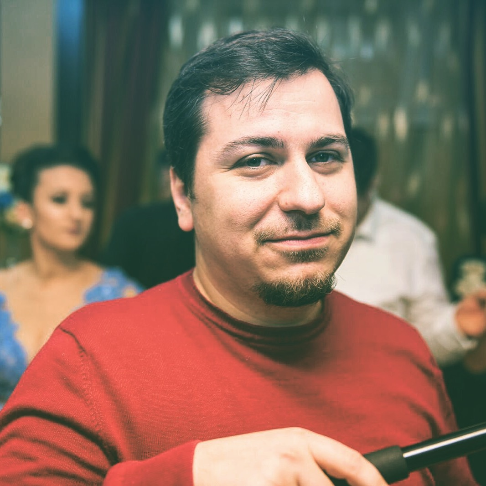

Welcome to my blog
Sunt o persoana deschisa, careia ii place it-ul,fotografia si natura. Pe langa aceste hobby-uri ar mai fi multe de enumerat. Imi place programarea, de mult mi-a placut,dar cred ca viata mi-a rezervat mereu altceva.Imi plac iesirile in natura,libertatea care ti-o ofera ea. Mai multe va las pe voi sa aflati :)).